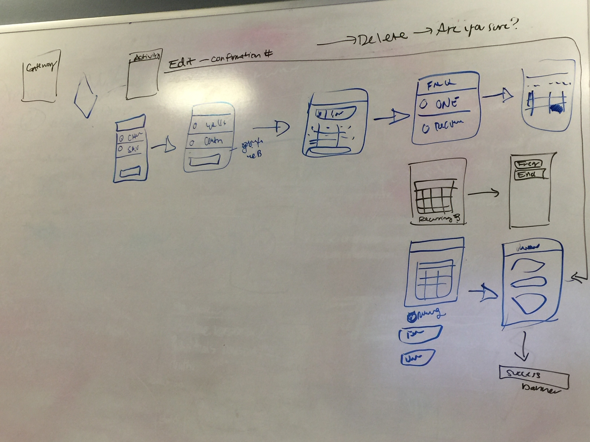

The Mutual of Omaha bank wanted to create a way for account holders to easily transfer funds to from their checking/savings accounts to outside financial institutions via a mobile device.
Discovery
Background
The bank completed and released it’s first design. I entered the project to execute version 1.1
The original work was performed by a national agency, and the Bank decided to use the in-house design team going forward.
After sending out a survey to the early adopters of the mobile banking app, I put together a prioritization roadmap.
The most requested feature was to transfer money to external bank accounts.
Competitor Analysis
I performed a competitor analysis on how major financial institutions executed “bank to bank” transfers. I found that most competitor financial institutions, such as Wells Fargo and Bank of America’s process’s were quite simple and could be done in a few steps.
User Interviews
Bank to Bank transfers seemed to be most important to our members, as most of them used Mutual of Omaha bank as their primary account. Majority of our members switched to us from larger banks.
Even though our members switched from larger financial institutions, they still wanted the ability to transfer money to and from their additional accounts.
They decided to keep those other bank accounts open and wanted the ability to move money to them.
Limitations
There was a major limitation on adding this feature, in that the user did not have the ability to add external banks in the mobile application.
The user had to use the web portal to add and approve external banks first, then they were granted the ability to transfer out funds to other accounts.
This was due to the vended platform Mutual of Omaha Bank was using.
Wireframe
This design was based as much as possible on designs that have already been implemented in the banking application in order to reduce development effort.
This whiteboard session included the product owner and the lead developer, which allowed us to get to a viable solution to test in just one design session.

Prototype
Internal Validation
Internal Review and Collaboration
This design was based as much as possible on designs that have already been implemented in the banking application in order to reduce development effort.
This whiteboard session included the product owner and the lead developer, which allowed us to get to a viable solution to test in just one design session.
External Validation
Usability Study
Mutual of Omaha Bank has several local branches. I chose two of our locations to visit and talk with real Mutual of Omaha bank members. While I was there, I spoke with 5 people at each location who were willing to walk through the design in a life prototype.
All Mutual of Omaha bank members were able to successfully transfer funds to an external account with no problems.